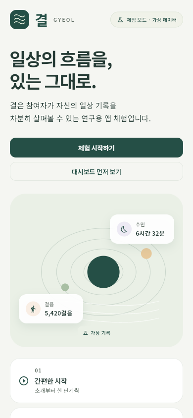

간편한 시작
소개부터 한 단계씩 둘러봅니다.
GYEOL DEMO
결은 참여자가 자신의 일상 기록을 차분히 살펴보는
연구용 앱 체험입니다.
설치 없이 링크만 열면 바로 실행됩니다. 앱처럼 쓰고 싶다면 브라우저 메뉴에서 홈 화면에 추가하세요. 실제 센서·권한·연구 등록은 없습니다.

수면가상 기록
6시간 32분걸음가상 기록
5,420걸음소개부터 한 단계씩 둘러봅니다.
가상 데이터의 흐름을 그대로 봅니다.
상태와 안내를 직접 확인합니다.
INSTALL & TRY
웹으로 바로 여는 것을 권합니다. 앱처럼 쓰고 싶다면 홈 화면에 추가하세요. 어느 쪽이든 같은 가상 데이터 체험입니다.
WEB DEMO · 권장
설치 없이 링크만 열면 실행됩니다. 휴대폰과 컴퓨터 모두 같은 가상 데이터 화면입니다.
웹 체험 열기기기 보안 설정을 바꿀 필요가 없고, 설치 차단이 없습니다.
ANDROID
Chrome에서 웹 체험을 열면 화면 위에 설치 안내가 나타납니다. 앱 설치하기를 누르면 홈 화면에 앱처럼 추가됩니다. Chrome 메뉴의 홈 화면에 추가를 눌러도 됩니다.
설치 파일(APK)로 설치하기설치 파일은 스토어를 거치지 않아 기기가 보안 확인을 요청하거나 차단할 수 있습니다. 꼭 앱 파일이 필요할 때만 사용하세요.
IPHONE · SAFARI
iPhone은 Apple 정책상 설치 파일로 앱을 설치할 수 없습니다. 홈 화면에 추가하는 웹 체험입니다.
ON YOUR COMPUTER
큰 화면에서는 넓은 레이아웃으로 열리고, 휴대폰 화면 그대로 보고 싶다면 미리보기로 체험할 수 있습니다. 두 화면 모두 같은 가상 기록을 사용합니다.
DEMO BOUNDARY
가상 기록을 바탕으로 온보딩, 대시보드, 수집 상태와 참여 설정의 화면 흐름을 살펴볼 수 있습니다. 아래는 이 체험에 없는 기능입니다.